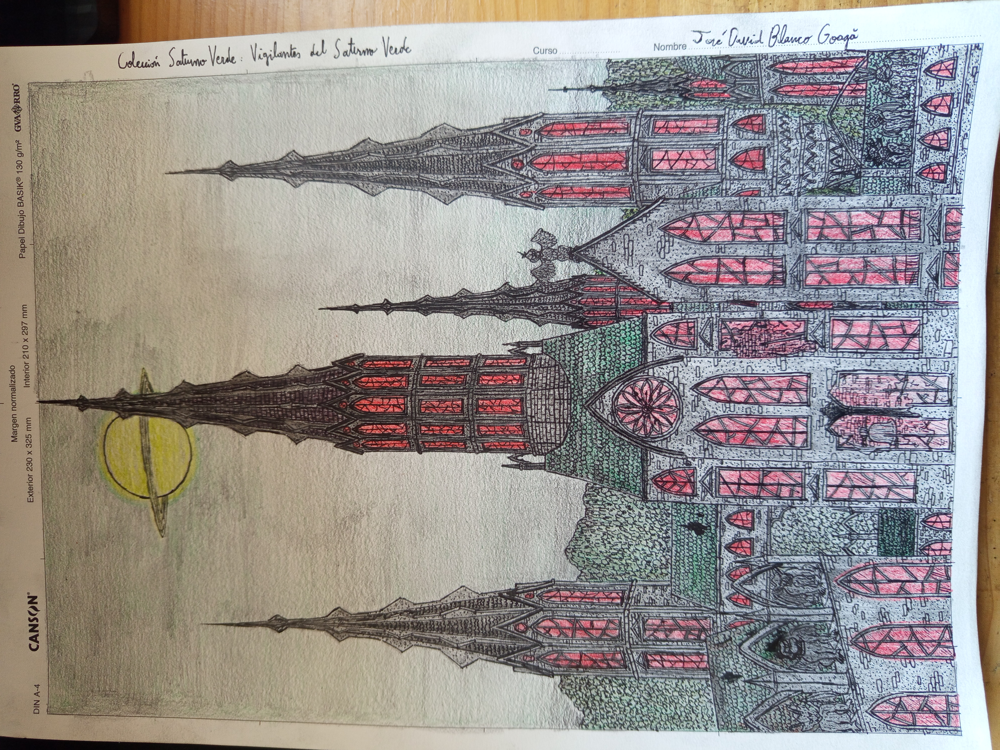

According to testimonies, many people had witnessed lucid dreams about this fictional moon. According to the information given by Michael Schmidt, it is some kind of secondary effect of a drug. Apparently, in The Blackwood Committee were traitors among them, one day Doctor Voss went to a library and took out the famous novel from George Orwell: "1984". Since then, he went on a research of absolute control, while Doctor Blackwood was in charge of finding resorces for inmortality, Doctor Voss was developing a pill to cause the same exact effect of the sensation of being watched. The lucid dreams about the planet were only part of the process, a dream that everyone who takes the medicine would dream about it. We have 3 important subjects:
He wrote a whole diary of his life, trauma, paranoia and every dream he has experienced
A romanian painter who lived in Ravenford and suffered racism and was violently abused, his doctor recomended this treatment. Later, he would represent it as a drawing like the picture above
He visited Iosif frequently, apparently he learned about the meaning of those paintings and was mentally injured. The day of the Great Earthquake, he was found in the street damaging himself, and babling about the Green Saturn. Then, he went to a mental asylum and never got out from there.